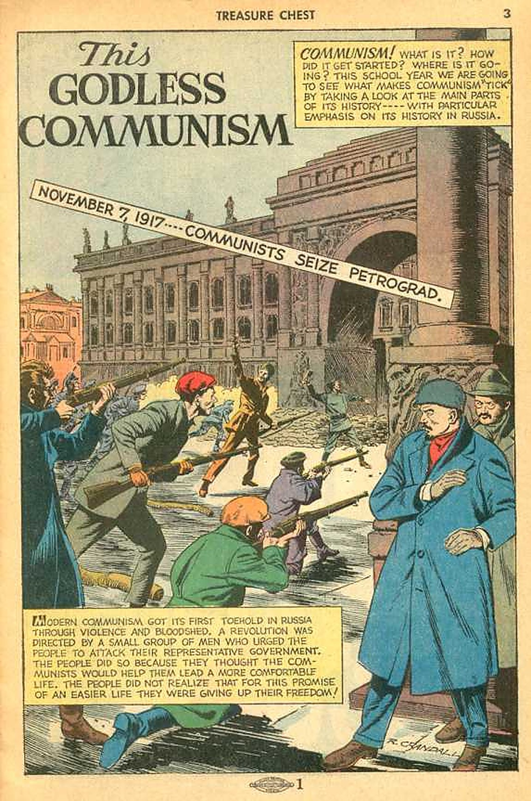

How it works: read the comic pages → answer the question about today's big idea → see what the comic got right and wrong → write 1–2 sentences or answer a second check. Done = all parts green, then turn in at the bottom.
Content note: This is a real 1961 American comic made to warn kids about communism. It is one-sided on purpose. It shows prison camps and people being arrested.
Word help (tap to open)
- Communism = one party runs the government and owns the farms and factories
- Secret police = police who spy on people and arrest them for what they say or think
- Informer = a person who secretly reports on others to the government
- Purge = getting rid of people a leader doesn't trust, often by jail or death
- Collective farm = a big farm owned by the government, where families had to work
- Propaganda = a message made to push you to feel or believe one thing

Click the page to make it bigger.
Turn in your work
Your work saves on this device, so you can come back later. Your teacher sees it after you turn it in.
Comic: “This Godless Communism,” Treasure Chest of Fun and Fact, Vol. 17 (1961–62), Geo. A. Pflaum, Publisher, Dayton, Ohio; art by Reed Crandall. Scans: Internet Archive (from historyonthenet.com). Shown as a historical source for classroom study. Reader pages come from Parts 1, 5, 6, 9, and 10 of the 10-part series.